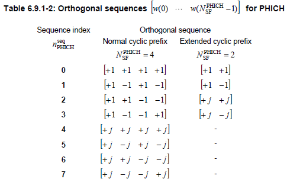
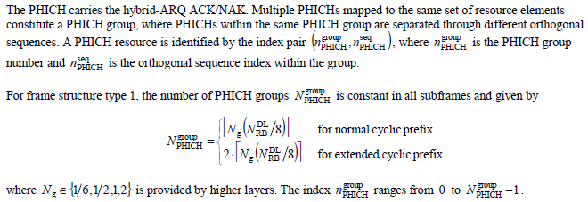

LTE Quick Reference Go Back To Index Home : www.sharetechnote.com
PHICH stands for Physical channel HybridARQ Indicator Channel. Simply put, it is a secially designed downlink only channel which carries ACK or NACK for the PUSCH received by the network.
Uplink case they just used PUCCH for carrying ACK/NACK for each PDSCH it recieved. Why don't we use PDCCH for ACK/NACK on network side. Good topic for you to think over -:)
- PHICH is carried by the first symbol of each subframe. (It is located in the same symbol as PCFICH).
- One PHICH is carried by multiple REG.
- Multiple PHICH can be carried by the same set of REG and these multiple PHICH being carried by the same REGs are called PHICH group. These multiple PHICHs are multiplexed by orthogonal codes.
- Therefore, to indentify a specific PHICH we need to know PHICH group number and orthogonal code index.
In some (many ?) cases, mutiple PHICH can be mapped to a same set of resource elements and this group of PHICH being carried by the same set of resource element is called PHICH Group. (Why we have to carry multiple PHICH on a same set of resource elements ? Another good items for you to think -:) ).
When some "multiple things" are carried by the same physical resources, we call the multiple things being "multiplexed". So we can say a group of PHICH is being 'multiplexed' onto a set of resource elements.
When you multiplex something, you always have to think about how to "de-multiplex" them. It means that you have to multiplex somethings in such a way that they can be easily separated into individual things. If you multiplex things and those things cannot be demultiplexed, it is called a garbage -:).
One of the most common way of multiplexing in wireless communication would be to use "orthogoal sequences". (You may remember how they multplexed multiple set of data in CDMA or WCDMA). PHICH multiplexing also uses the same method, meaning they are multiplexed with a set of predefined orthogonal sequences. The set of orthogonal sequence defined in 3GPP 36.211("6.9 Physical hybrid ARQ indicator channel") is as follows.

You may notice that the PHICH spreading factor for 'Extended cyclic prefix' is half of the one for 'Normal cyclic prefix'.
As a summary, I will put down the definition of PHICH and PHICH group is defined in 3GPP 36.211 "6.9 Physical hybrid ARQ indicator channel" as follows.

You would quickly notice that number of PHICH group is twice as many for extended cyclic prefix as the one for normal cyclic prefix.
You would see that to calculate the N_group_PHICH you should know Ng value and the specification says the Ng value comes from higher layer. In this case, the higher layers means "MIB (Master Information Block)". MIB has an IE(information element) called "phich-Resource" as shown below. This IE represents Ng.

How many PHICHs can be carried by one PHICH group ? Maximum 8 PHICHs can be multiplexed into a PHICH group when we use normal CP and Maximum 4 PHICHs can be multiplexed into a PHICH when we use the extended CP. Zero PHICH in a PHICH group is also allowed.
How many PHICH groups can be supported by a system bandwidth ? This can be determined by the system bandwidth (N_RB) and a special parameter called Ng. These N_RB and Ng value is carried by MIB as shown above.
With Ng and the N_DL_RB (maximum number of RB for a system bandwidth), you can calculate the N_group_PHICH as in the following table.
|
N_RB \ Ng |
1/6 |
1/2 |
1 |
2 |
|
6 (1.4 Mhz) |
1 |
1 |
1 |
2 |
|
15 (3 Mhz) |
1 |
1 |
2 |
4 |
|
25 (5 Mhz) |
1 |
2 |
4 |
7 |
|
50 (10 Mhz) |
2 |
4 |
7 |
13 |
|
75 (15 Mhz) |
2 |
5 |
10 |
19 |
|
100 (20 Mhz) |
3 |
7 |
13 |
25 |
Each PHICH in a PHICH group is mapped to each UE.
How many REG would be required to carry one PHICH ? To figure this out, we have to go through several steps and do some mental calculation.
i) ACK and NACK is encoded by 3 bits (111 for ACK, 000 for NACK).
iii) According to Table 6.9.1-2 of 36.211, each bit of PHICH is spreaded by 4 bits (SF=4) when we use 'normal cyclic prefix'. So each PHICH after spreading with a 4 bits orthgonal sequence becomes 12 bits.
iii) PHICH is modulated in BPSK and this means 'one symbol carries one bit'. And this in turn means we need 12 symbols for each PHICH (each ACK or NACK).
iv) Each RE (Resource Elements) carries one symbol. So we need 12 REs to carry one PHICH (one ACK or NACK).
v) one REG is made up of 4 REs. So we need 3 REGs to carry one PHICH.
vi) These three REGs for one PHICH is distributed evenly across the whole bandwidth.
From those multiple Groupes in a system bandwith and multiple PHICHs within each PHICH group, how UE would know exactly which PHICH to look for ? For the very details, you have to understand the procedure described in 9.1.2 PHICH Assignment Procedure of 36.213. As I mentioned above, you have to know the PHICH group number and orthogonal sequence index to locate the specific PHICH. UE figure out these two numbers from the lowest PRB index of the first slot of the PUSCH transmission and DMRS cyclic shift.